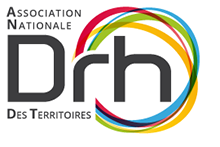
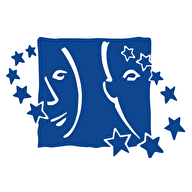
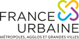

Promotion de la marque & Partenariats
Communication et partenariats institutionnels pour porter la voix de la prévention santé.
TERRITORIA mutuelle est présente sur divers événements institutionnels et s'associe à différents partenaires pour porter haut la voix de la protection sociale et de la prévention au nom de la marque TERRITORIA, mais aussi pour porter les valeurs d'inclusion qui lui tiennent à cœur.
Le comité d'experts
Entourée d'associations nationales œuvrant sur les questions de protection sociale, de prévention et de santé au travail, TERRITORIA mutuelle anime un comité d'experts : un espace d'échanges et de discussions autour des sujets d'actualité et des préoccupations de terrain des collectivités.
Il est également l'occasion de se tenir informé des organisations à venir des partenaires, de prévoir nos participations réciproques à ces temps forts, et de contribuer au succès du Challenge Inclusion. Retrouvez les actualités du comité dans nos actualités.
Les associations composant le comité

ANDCDG
L'Association nationale des directeurs et directeurs adjoints des centres de gestion (ANDCDG) rassemble près de la totalité des cadres dirigeants des centres de gestion de la fonction publique territoriale. Son principal objet est de valoriser l'institution « centre de gestion », à travers des rapports techniques et stratégiques, en appui complémentaire et souvent préalable aux actions de la Fédération nationale des centres de gestion. andcdg.org (nouvelle fenêtre)

ANDRHDT
L'Association nationale des directeurs de ressources humaines des territoires (ANDRHDT) regroupe les responsables des ressources humaines des collectivités territoriales — conseils départementaux et régionaux, mairies, EPCI — ainsi que leurs principaux collaborateurs. C'est un lieu de partage, de ressources et d'échanges d'expériences des DRH des collectivités territoriales. andrhdt.net (nouvelle fenêtre)

SNDGCT
Le Syndicat National des Directions Générales des Collectivités Territoriales (SNDGCT) représente, soutient et fédère les Directions Générales et contribue à l'action publique. Ses missions : promouvoir et valoriser les métiers de Direction Générale tout en accompagnant ses adhérents ; apporter une contribution de terrain sur les sujets à enjeux pour le monde territorial ; coopérer et capitaliser sur les bonnes pratiques avec l'ensemble des partenaires publics et privés. sndgct.fr (nouvelle fenêtre)
ADRHGCT
L'ADRHGCT regroupe les responsables des ressources humaines des collectivités territoriales et des établissements publics de coopération intercommunale. Elle a pour mission d'établir entre ses adhérents des relations d'échange et de coopération sur l'exercice de la fonction RH, d'être un lieu de réflexion et de propositions en matière de gestion des ressources humaines et de statut de la Fonction Publique Territoriale, d'organiser des manifestations (colloques, journées d'études) et d'établir des échanges avec des organismes similaires en France et à l'international. drh-grandes-collectivites.fr (nouvelle fenêtre)
ADT-INET
L'Association des dirigeants territoriaux et anciens de l'INET (ADT Inet) constitue un réseau de plus d'un millier de membres, principalement issus des différentes formations de l'INET. Créée pour promouvoir la formation professionnelle des cadres dirigeants territoriaux, elle s'investit aujourd'hui en faveur de la transition écologique et sociale des territoires. adtinet.fr (nouvelle fenêtre)

France Urbaine
France urbaine est l'association de référence des métropoles, grandes villes et grandes intercommunalités françaises, représentant plus de 30 millions d'habitants. Elle fédère 106 collectivités de toutes sensibilités, unies par une conviction commune : les territoires urbains constituent un moteur essentiel du développement, de l'innovation et de la cohésion nationale. Elle porte la voix du fait urbain dans le débat public et prône la décentralisation de l'action publique. franceurbaine.org (nouvelle fenêtre)
Événements
TERRITORIA mutuelle est présente lors d'événements institutionnels ou portés par ses partenaires, afin d'aller à la rencontre des collectivités et de leurs agents. Salons, colloques, congrès, mais aussi rencontres territoriales, challenges nationaux et conférences : autant de manifestations apportant visibilité et proximité, et permettant à TERRITORIA mutuelle de rester en veille des actualités liées à la prévention et à la protection sociale.
Challenge Inclusion APICIL
Le Challenge Inclusion a pour ambition de mettre en lumière la diversité des enjeux liés à l'inclusion : handicap, maladie, précarité, origines (sociales, géographiques, ethniques…), âges, genres, orientations sexuelles, apparences physiques, etc. Des prix récompensent des projets porteurs de sens, d'impact et de solidarité en France métropolitaine ; depuis 2024, l'un des prix est réservé à un projet porté par une collectivité — catégorie pilotée par TERRITORIA mutuelle, associée au groupe APICIL dans le cadre de ce challenge.
Et si votre collectivité candidatait ?
Pour candidater, rien de plus simple : réalisez une vidéo de 2 min maximum pour présenter votre projet, puis déposez-la sur la plateforme dédiée : challenge-inclusion.fr (nouvelle fenêtre).
Les dates importantes de l'édition 2026
- 9 septembre → 7 octobre : dépôt des candidatures (vidéo) sur la plateforme ;
- 9 octobre → 1er novembre : appel aux votes du public ;
- 2 → 9 novembre : choix des finalistes par les jurys (3 finalistes/catégorie) ;
- décembre : soirée de finale et remise des prix à Lyon.
À la clé
- une dotation financière de 10 000 € par projet lauréat ;
- une dotation financière de 2 000 € par projet pour les 2 autres finalistes ;
- une valorisation le soir de la finale ;
- une mise en lumière via notre réseau et nos partenaires.
Les collectivités souhaitant d'autres renseignements peuvent contacter : prevention@territoria-mutuelle.org.
Parrainage
Sensible aux questions d'inclusion et soucieuse de son ancrage local, TERRITORIA mutuelle soutient des projets engagés dans les domaines du handicap et/ou de la santé. Elle accompagne des acteurs de terrain qui, par leurs actions, favorisent l'insertion ou la réinsertion sociale et professionnelle de personnes en situation de handicap ou touchées par la maladie, par divers moyens (sport, musique, peinture, cuisine…). À plusieurs, on est plus fort : ces structures apportent une assise collective pour aider à reprendre confiance en soi, à retrouver du sens, à trouver sa voie, ou tout simplement à s'apaiser.
TERRITORIA mutuelle soutient :
- l'ASN Basket (nouvelle fenêtre) pour son activité handibasket ;
- le Niort Hockey Club (nouvelle fenêtre) pour son activité parahockey ;
- l'association Jazz à Niort (nouvelle fenêtre) pour son festival et son projet « Jazz au menu », en lien avec l'établissement de soins médicaux et de réadaptation pédiatrique « les Terrasses » ;
- le CH de Niort pour la réalisation de la fresque murale « Mi » par l'artiste Maggy ;
- l'association les PrinSEINSes (nouvelle fenêtre) pour leur marche rose ;
- le comité départemental handisport des Deux-Sèvres (nouvelle fenêtre) pour ses actions de sensibilisation ;
- l'association Courir Atout Cœur (nouvelle fenêtre) pour sa course solidaire « 10 km puissance 4 » ;
- le fonds de dotation Melioris (nouvelle fenêtre) pour son projet « la tête au ciel ».